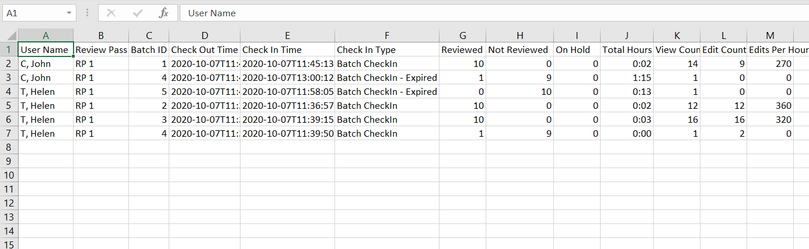
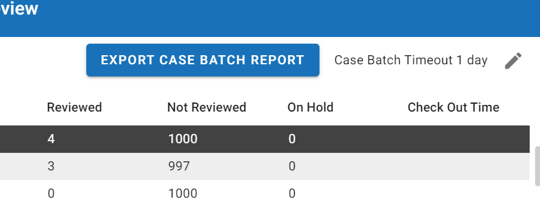

You can download a report that details the progress reviewers are making on batches in a case. The Export Case Batch Report button, located in the top-right corner of the Review Pass Management screen, downloads the report as a CSV file to your local machine. This report includes information about every batch that has been checked out and checked back in throughout the case. The following is an example of a case batch report:

|
|
Note: The case batch report, which you can export from the Batch Management section of the |

To download a case batch report, complete the following steps:
- Open the Batch Management tab in the Review Pass Management screen. For instructions on how to navigate to the Batch Management tab, see Open Batch Management.
-
Click the Export Case Batch Report button.

- The report downloads to your machine. Open the report by selecting the downloaded file at the bottom of your browser window, or by navigating to the Downloads folder of your local file explorer.